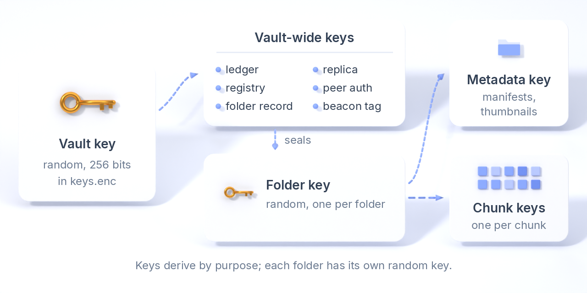
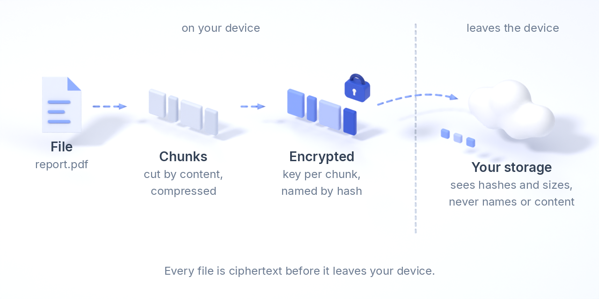
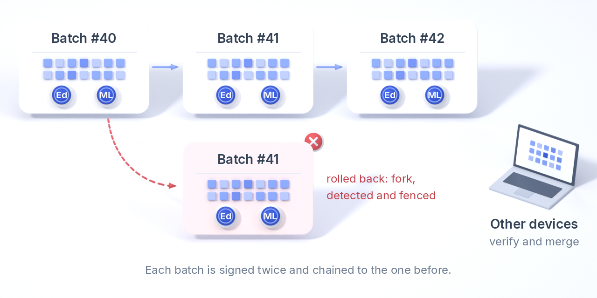
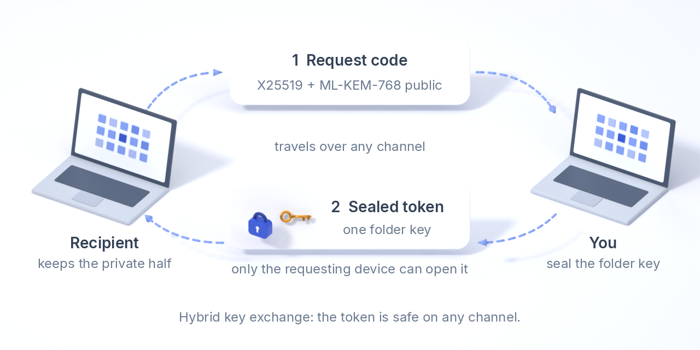
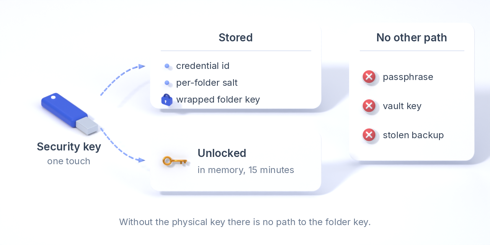
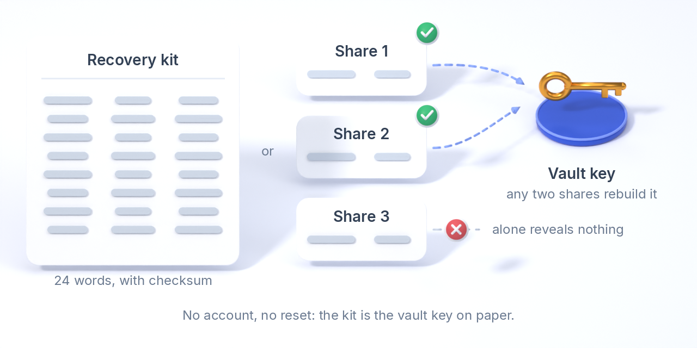

Encryption, in full
This page explains, mechanism by mechanism, how Varsto keeps your files private and your bookkeeping trustworthy, and what each party can and cannot learn. Everything here is implemented in the open source core (crates/varsto-core) and described with exact field layouts in the storage format. The design has not been audited yet; see the threat model for what it does and does not defend against.
1. The algorithms
| Purpose | Algorithm | Notes |
|---|---|---|
| Content and metadata encryption | XChaCha20-Poly1305 (AEAD) | 256-bit keys, 192-bit nonces, 128-bit authentication tag. Every ciphertext carries associated data that names what it is, so a block cannot be swapped into another role. |
| Hashing and key derivation | BLAKE3 (keyed hash and derive_key) | Chunk ids and file hashes are keyed, so a storage provider cannot recognise known files by their hash. Every derived key carries the context e2ee-sync-format/0/<purpose>, a format constant that does not follow product renames. |
| Passphrase to key | Argon2id | 64 MiB memory, 3 passes, 1 lane as fixed minimums; a random salt per device. Unlocks the device's key file only; the passphrase never leaves the device. |
| Signatures (ledger, records) | Ed25519 + ML-DSA-65, hybrid | Both signatures cover the same bytes and both must verify. A key with a post-quantum part never accepts an Ed25519-only signature. Identifier ed25519+ml-dsa-65 on every signed object. |
| Key exchange (sharing) | X25519 + ML-KEM-768, hybrid | Two shared secrets combined with BLAKE3 over the full transcript; a secret sent to a device stays private unless both algorithms are broken. |
| Security-key folders | FIDO2 hmac-secret | The authenticator derives a 32-byte secret from a credential and a per-folder salt after a touch; Varsto wraps the folder key under it. |
| Recovery kit | BIP-39 words, Shamir over GF(256) | 24 words with checksum; optional 2-of-3 shares, each a 24-word phrase. |
2. The key hierarchy

Everything starts from one random 256-bit vault key, created on the first device and never derived from anything you type. It is the one secret to keep; the recovery kit is that key on paper.
- On each device the vault key and the device's signing key are stored in
keys.enc, encrypted under a key that Argon2id derives from the device passphrase. The passphrase unlocks a device; it is not the vault key, and changing it re-wraps the file without touching anything in storage. - Vault-wide keys are derived from the vault key by purpose: the ledger key (
ledger), the device registry key (device-registry), the folder record key (folder-record), the replica ledger key (replica-ledger), the peer authentication key (p2p-auth) and a beacon tag key (p2p-tag). Deriving by purpose means a compromise of one derived key does not expose the others or the vault key. - Per folder a random folder key is created when the folder is created and published to other devices in an encrypted folder record. From it come the folder's dedup-hash key (
dedup-hash), its metadata key (folder-metadata, for manifests and thumbnails) and, per chunk, a chunk key and chunk nonce. Holding one folder's key opens that folder and nothing else; this is what sharing hands over. - Per device there is a signing key (Ed25519 + ML-DSA-65) whose public half is the device's identity; the device id is a keyed hash of it. The local keyring (
keyring.enc, folder keys this device knows) and the storage secrets file (secrets.enc, S3 secret access keys) are encrypted under keys derived from the vault key with the device id in the associated data.
3. How a file becomes ciphertext

- Chunking. The file is cut into content-defined chunks (a rolling hash picks the cut points), so an edit in the middle changes a few chunks, not the whole file.
- Identity. Each chunk gets an id: a BLAKE3 keyed hash of its plaintext under the folder's dedup-hash key. The same content in the same folder has the same id on every device, which is what makes deduplication work offline; the key stops anyone without it from testing whether you hold a known file.
- Compression. The chunk is compressed with zstd when that saves at least 5 %; one method byte records the choice. The level is a format constant, so every device produces the same bytes for the same chunk.
- Encryption. The chunk is encrypted with XChaCha20-Poly1305 under a chunk key derived from the folder key and the chunk id, with a nonce derived the same way, and associated data naming the vault, the chunk and its length. Deterministic keys and nonces are safe here because each chunk key is used for exactly one message; they are what lets two devices produce byte-identical objects without talking.
- Naming. The object stored is named by the BLAKE3 hash of the ciphertext. Any copy, anywhere, can be verified against its name without any key: that is how replicas and
fsck --verifycheck copies they cannot read. - Manifests. Which files exist, their paths, sizes, chunk lists and version vectors are written as a manifest, encrypted under the folder metadata key with the vault, folder, device and sequence number as associated data. Storage never sees a file name.
Known trade-off: deterministic (convergent) encryption inside a folder means that two users who both hold the folder key can tell whether they have an identical file, and sizes of compressed chunks are visible to the storage. Shared folders with random per-chunk keys are planned for the cases where that matters.
4. Bookkeeping you can verify: the signed ledger

Every device keeps an append-only ledger of what it did: stored a chunk here, verified a chunk there, holds this file, published that manifest. Events are grouped into batches; a batch is encrypted under the ledger key and then signed with the device's hybrid key over its hash, the device id and its sequence number. Batches chain through the hash of the previous batch, so a device whose history is rolled back (restored from an old backup) produces a fork that every other device detects and fences. Other devices read the batches through the shared storage, verify both signatures, and merge them; nobody needs to be online at the same time, and no server is trusted to order anything.
Device records (name and public key) are encrypted under the registry key and bound to the device id; a record whose key does not hash to its id is rejected. Policy records, peer records and folder records follow the same pattern, each with its own purpose key and associated data.
5. What each party can see
| Party | Sees | Cannot see |
|---|---|---|
| A storage provider (bucket, NAS, disk, rclone remote) | Object names (hashes of ciphertext), object sizes, how often you write and read, your device count from the number of ledger directories. | File names, contents, folder names, which chunks belong to which file, the hash of your plaintext. |
| An untrusted replica (a friend's NAS) | The same as a storage provider, plus that objects verify against their names. It signs its own claims under a replica-only key. | Any content, name or manifest; it never receives a folder key or the vault key. |
| A peer on the LAN or the internet | That some device requests objects by name, after proving it holds the vault's peer authentication key. | Anything without that key: a stranger gets no object, and the LAN beacon carries only a keyed tag, not the vault id. |
| Someone you share a folder with | That folder: every file in it, and your devices' signed claims about it. | Any other folder, the vault key, your device registry. |
| An AI assistant through the MCP server | The folders you granted, read-only unless you said otherwise; file names, sizes, last-used times and, when it reads a file, its content; with a read-write grant it can move files and write new ones there. | Folders you did not grant; Strongroom folders, ever. |
| A thief with your unlocked laptop | Everything a normal folder holds while the device is unlocked. | Strongroom folders without your security key; nothing after you revoke the device (planned) or rotate keys. |
6. Sharing without exposing the key

The recipient's device creates a hybrid key pair (X25519 + ML-KEM-768) and prints a request code with the public half. The owner encapsulates to both halves, derives one key from both shared secrets together with the ciphertext and the public key (so the transcript is bound), and encrypts the folder key with it, naming the vault, folder and folder name in the associated data. The resulting token can travel over any channel: only the requesting device can open it, and it opens one folder. A plain token that carries the key itself still exists for people who have a secure channel and says so loudly.
7. Strongroom: cryptographic, not a dialog

A Strongroom folder's key is never at rest. At creation the security key makes a credential, then produces a 32-byte secret from that credential and a random per-folder salt (the FIDO2 hmac-secret extension). Varsto derives a wrapping key from that secret, encrypts the folder key with it, and stores only the credential id, the salt and the wrapped key, in the local keyring and in the published folder record. Unlocking repeats the touch, unwraps the key into memory for a window (15 minutes by default), hands it to the running background service over the local, token-protected API, and forgets it when the window ends. Without the physical key there is no path to the folder key: not through the passphrase, not through the vault key, not through a stolen backup.
8. Passphrases, unlocking and the recovery kit

The device passphrase goes through Argon2id with a per-device salt to produce the key that encrypts keys.enc; the background app can keep the passphrase in the operating system's keychain so the service unlocks itself after login. Losing a passphrase loses that device's copy of the keys, not the vault: another device, or the recovery kit, enrols a new one. The recovery kit prints the vault key as 24 BIP-39 words (256 bits plus an 8-bit checksum, so a miscopied word is caught) and, if you ask, three Shamir shares of which any two rebuild the key while one alone reveals nothing. There is no account, no escrow and no reset: that is the point, and the kit is how you carry the responsibility.
9. Transport and the local interface
Objects are ciphertext before they leave the device, so transport adds no second layer: S3 is spoken over HTTPS with Signature Version 4 and the secret access key is kept in the encrypted secrets file; rclone remotes use rclone's own configuration; peers exchange objects over plain HTTP with a per-request proof derived from the peer authentication key and valid for five minutes. The desktop interface is served only on 127.0.0.1, every request carries a per-session token, the Host header is checked, and the page runs under a strict Content Security Policy with no external resources.
10. Honest limits
- Not audited. The algorithms are standard and the libraries are well-known Rust implementations, but the composition has not been reviewed by an outside cryptographer yet.
- Metadata leaks to storage: object sizes, write and read patterns, the number of devices and the rough number of chunks. Padding and cover traffic are not implemented.
- Convergent encryption inside a folder lets co-holders of the folder key confirm identical files (see section 3).
- Revocation of a device and re-keying a folder are designed, not built: today a lost device is fenced in the ledger but its copy of the keys stays valid until you rotate.
- Strongroom protects the folder key, not a file you fetched and left on disk; free it when you are done.
- The vault key is a single secret. Keep the recovery kit in more than one place.
Field-level details, byte layouts and version rules: storage format, key hierarchy, ledger signing notes, security principles.